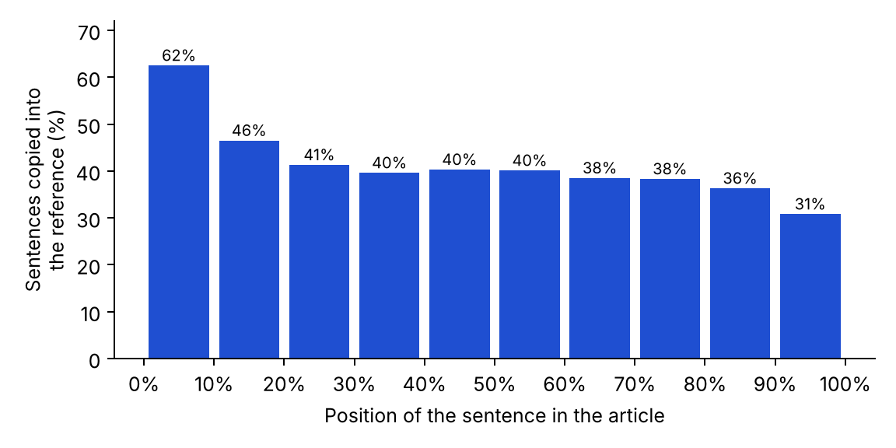
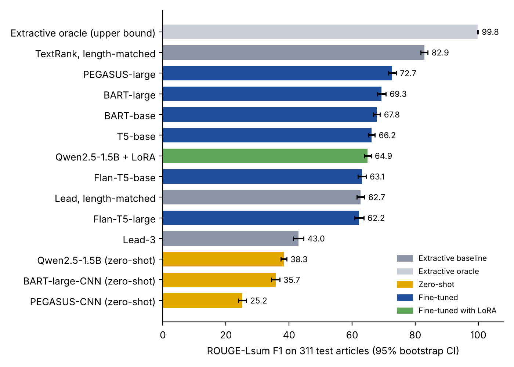
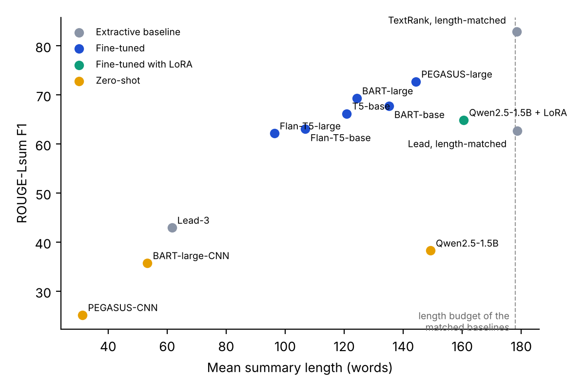

Experiment · Natural language processing
A 30-line TextRank beat every model I fine-tuned on BBC News Summary. The reference summaries explain why
I rebuilt my news summarisation project with fourteen systems, three seeds and a clean test set. The best result came from a method that needs no training at all.
By Muzammal Hussain · 1 November 2026, updated 8 November 2026 · 8 min read
BBC News Summary is a popular dataset for teaching and testing text summarisation: 2,225 BBC articles, each paired with a summary. My first version of this project fine-tuned five transformer models on it. This week I rebuilt it from scratch, added simple baselines, a small language model and proper uncertainty, and ran everything on Kaggle GPUs. The fine-tuned models did well. A ranking algorithm from 2004 did better, and the reason says more about the dataset than about the models.
Key findings
- TextRank, given the same length budget as the reference, scored 82.9 ROUGE-Lsum and 77.3 ROUGE-2. The best of seven fine-tuned models, PEGASUS-large, scored 72.7 and 64.5, and TextRank scored higher on 81% of test articles.
- 95% of the sentences in the reference summaries appear word for word in the article, and a summary is on average 45% as long as its article. The task is closer to picking sentences than to summarising.
- Every fine-tuned model beat simply taking the first sentences of the article on ROUGE-2, but on ROUGE-Lsum Flan-T5-base (+0.4, 95% CI −1.3 to 2.0) and Flan-T5-large (−0.5, −2.4 to 1.3) did not. Bigger was not better: Flan-T5-large wrote the shortest summaries and scored below Flan-T5-base.
- Summarisers trained on other news (CNN/DailyMail) and a zero-shot Qwen2.5-1.5B scored only 25 to 38, mostly because they write much shorter or freer summaries than this dataset expects. The zero-shot Qwen also wrote numbers that were not in the article (7.8% of its numbers).
- 154 of the 2,225 articles are near-duplicates. Under a naive random split, 11.5% of test articles would have a copy in the training set.
What went wrong the first time
Rebuilding the project started with re-reading my own code, and it did not survive. In the preprocessed file I had trained on, the column named title held the full article and the column named text held the summary. So my models had learned the task backwards: summary in, article out. ROUGE, the standard overlap score, had then been computed against the article, with its arguments reversed, on test rows that partly overlapped the training set. Those scores cannot be used, and I have withdrawn them. Everything below comes from new code with tests, run from a public notebook.
The data, checked first
The BBC articles come from 2004 and 2005 and cover five topics: business, entertainment, politics, sport and tech. Before training anything I removed near-duplicate articles (word 5-gram overlap of at least 90%), 154 in all, 138 of them exact copies. That left 2,071 articles, split once into 1,449 for training, 311 for validation and 311 for testing, stratified by topic. Every system was scored on the same 311 test articles, and the headline was removed from every input.
Then I looked at the reference summaries themselves. 94.8% of their sentences occur unchanged in the article. The median article has 329 words and the median summary 149. And the summaries prefer early sentences, though not strongly: 62% of sentences from the first tenth of an article are kept, against 31% from the last tenth.

So a "summary" here is roughly the most central half of the article, copied out in order. I could not find a description of how the summaries were made, but this profile is what an automatic sentence-scoring method would produce.
Fourteen systems on the same test set
I compared four groups. Extractive baselines pick sentences from the article: the first three sentences (Lead-3), the first sentences up to a length budget, and TextRank, which ranks sentences by how similar they are to the rest of the article. The length budget is the median summary-to-article ratio in the training set, 0.455, so no system ever sees the reference length. An oracle picks the sentences that best match each reference, which gives the ceiling for any sentence-picking method. Zero-shot models are used as they are: BART-large-CNN and PEGASUS-CNN, both trained to summarise CNN and Daily Mail news, and Qwen2.5-1.5B-Instruct, a small chat model, asked for a summary of the same length. Fine-tuned models were trained on the 1,449 training articles: BART-base, BART-large, T5-base, Flan-T5-base, Flan-T5-large, PEGASUS-large, and Qwen2.5-1.5B with LoRA, a method that trains a small add-on instead of the whole model. Each fine-tuned model was trained three times with different random seeds, with settings fixed in advance and early stopping on the validation set.

| System | ROUGE-2 | ROUGE-Lsum | BERTScore | Words |
|---|---|---|---|---|
| Oracle (upper bound) | 97.0 | 99.8 | 83.1 | 178 |
| TextRank, length-matched | 77.3 | 82.9 | 67.1 | 179 |
| PEGASUS-large | 64.5 | 72.7 ± 0.5 | 59.0 | 144 |
| BART-large | 62.6 | 69.3 ± 1.9 | 58.3 | 124 |
| BART-base | 59.0 | 67.8 ± 1.3 | 54.5 | 135 |
| T5-base | 57.9 | 66.2 ± 1.8 | 54.1 | 121 |
| Qwen2.5-1.5B + LoRA | 53.8 | 64.9 ± 0.5 | 48.0 | 160 |
| Flan-T5-base | 55.6 | 63.1 ± 1.7 | 52.6 | 107 |
| Lead, length-matched | 50.5 | 62.7 | 44.5 | 179 |
| Flan-T5-large | 55.8 | 62.2 ± 2.8 | 53.7 | 96 |
| Lead-3 | 35.4 | 43.0 | 37.3 | 62 |
| Qwen2.5-1.5B, zero-shot | 16.2 | 38.3 | 25.8 | 149 |
| BART-large-CNN, zero-shot | 25.8 | 35.7 | 30.0 | 53 |
| PEGASUS-CNN, zero-shot | 18.4 | 25.2 | 22.1 | 31 |
Scores are F1 on a 0 to 100 scale; "± " is the standard deviation across the three seeds. TextRank finished 10.2 ROUGE-Lsum points ahead of PEGASUS-large (paired 95% CI 8.7 to 11.5), and its lead held on BERTScore, which compares meaning rather than exact words (+8.1). PEGASUS-large was the best trained model, followed by BART-large. Every fine-tuned model beat the length-matched Lead baseline on ROUGE-2; on ROUGE-Lsum, both Flan-T5 models were level with it.
Why a simple ranking wins
Two things work in TextRank's favour. First, its output has the same shape as the reference: whole sentences from the article, in order, at the right length. The fine-tuned models learned to copy too (over 99% of their words come from the article, and only 4 to 5% of their word pairs are new), but they write shorter summaries, 96 to 160 words where the length-matched baselines write about 179, so they miss sentences the reference keeps. Among the fine-tuned models, the ones that wrote longer summaries generally scored higher, and Flan-T5-large, the shortest writer, came last despite being three times the size of Flan-T5-base. Second, TextRank chooses sentences by centrality, and the reference summaries look as if they were chosen the same way. Taking the first sentences at the same length scored 20 points lower, so length alone does not explain TextRank's score.

This does not mean TextRank writes better summaries than PEGASUS. It means this benchmark mostly measures how well a system reproduces a particular sentence-selection rule. A paper that reports a fine-tuned transformer on BBC News Summary without a TextRank baseline is missing the most informative comparison.
Models trained on other news, and a chat model
BART-large-CNN and PEGASUS-CNN are strong summarisers on their own data, where summaries are three or four short highlights. Here they wrote 31 to 53 words for references of about 150, so ROUGE punished them. Qwen2.5-1.5B, asked for a summary of the right length, wrote about the right length but in its own words: 73% of its word pairs were not in the article, and 7.8% of the numbers it wrote did not appear in the article either, against under 1% for every fine-tuned model. Fine-tuning the same Qwen model with LoRA for about 70 minutes per seed on one T4 GPU removed both problems and lifted it from 38.3 to 64.9.
A topic the model never saw
I also trained BART-base five more times, each time leaving one topic out of training, and tested it on that topic. Compared with the same model trained on all topics, ROUGE-Lsum fell by 1.0 to 3.4 points. Only the business drop had an interval that excluded zero (−3.4, 95% CI −5.9 to −0.6). Within BBC news, the topic matters less than the house style.
What I take from it
- Read the reference summaries before choosing a model. If they are copied sentences, an extractive baseline belongs in every comparison.
- Match the length budget, or the comparison mostly measures length. Lead-3 and Lead at the right length differ by 20 points.
- Remove duplicates before splitting. Here one test article in nine would otherwise have a copy in training.
- A small instruction-tuned model used zero-shot invents numbers; a short LoRA fine-tune on in-domain data fixed that in this test.
Limitations
- ROUGE and BERTScore measure overlap with one reference per article, not whether a summary is accurate or useful. The unsupported-number rate is only a rough check of factual errors.
- The dataset is small and comes from one publisher over two years.
- Model settings were fixed in advance, not tuned, and the length of fine-tuned summaries was not controlled. Tuning either could narrow the gap to TextRank, but is unlikely to close a 10-point difference.
Reproduce the experiment
The repository has the full pipeline as a tested Python package, the Kaggle notebook, the fixed data split and every table in this article. The fine-tuned PEGASUS-large, BART-base and Qwen LoRA models are on Hugging Face, and a browser demo puts TextRank and BART side by side on any article you paste. The notebook resumes where it stopped, so the whole study fits in free Kaggle GPU sessions.
Data: BBC News Summary on Kaggle (pariza/bbc-news-summary), built on the BBC news dataset of Greene and Cunningham, ICML 2006. TextRank: Mihalcea and Tarau, EMNLP 2004. ROUGE: Lin, 2004. BERTScore: Zhang et al., ICLR 2020. Models: BART (Lewis et al., 2020), T5 (Raffel et al., 2020), Flan-T5 (Chung et al., 2024), PEGASUS (Zhang et al., 2020), Qwen2.5 (Qwen team, 2024), LoRA (Hu et al., 2022). Code archived on Zenodo: doi:10.5281/zenodo.24046039. This is a small engineering experiment, not a peer-reviewed paper.